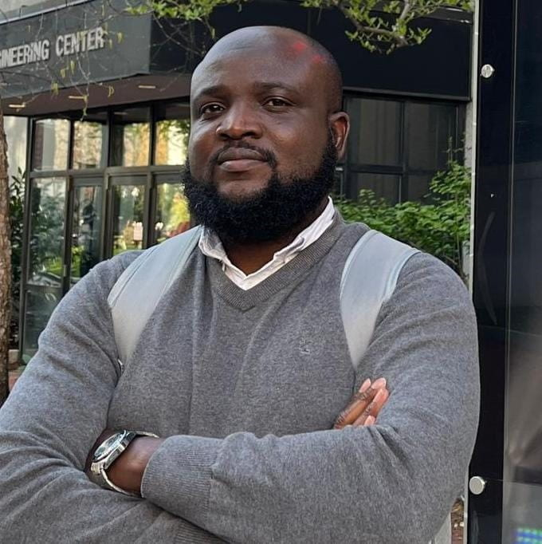

Journal article 2025
Politicization of Hate and Weaponization of Twitter/X in a Polarized Digital Space in Nigeria
Journal of Asian and African Studies
More publicationsInterdisciplinary researcher
PhD candidate, Northeastern University

Journal article 2025
Journal of Asian and African Studies
More publicationsInterview
A conversation about digital platforms, hate speech, and democracy in Nigeria.
More interviews and coverageHow do platforms set rules for online speech, and how do users interpret and challenge those rules?
Explore this researchI came to research through mass communication, public relations, and teaching. My work as a media strategist and later lead researcher at Nadeem Media Consult, and as founding Head of Mass Communication at Skyline University Nigeria, informs the questions I ask about technology, institutions, and public life.
Read my academic journeyPublic speaking at Northeastern and hands-on journalism education at Skyline, from student publications and video to newsroom visits, seminars, and research supervision.
Teaching and departmental leadershipMy newspaper writing on technology, journalism, and public policy, alongside interviews and coverage of my work.
Read articles and coverage